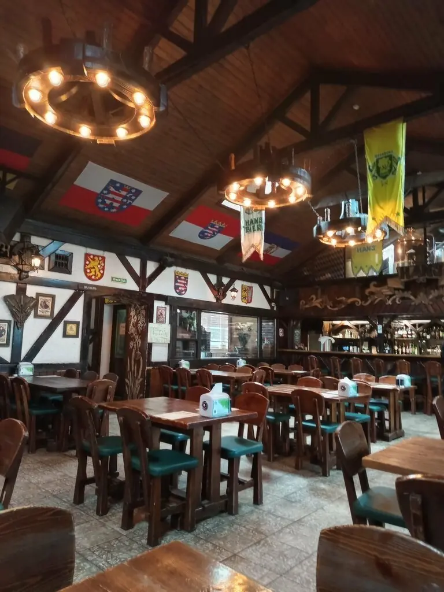
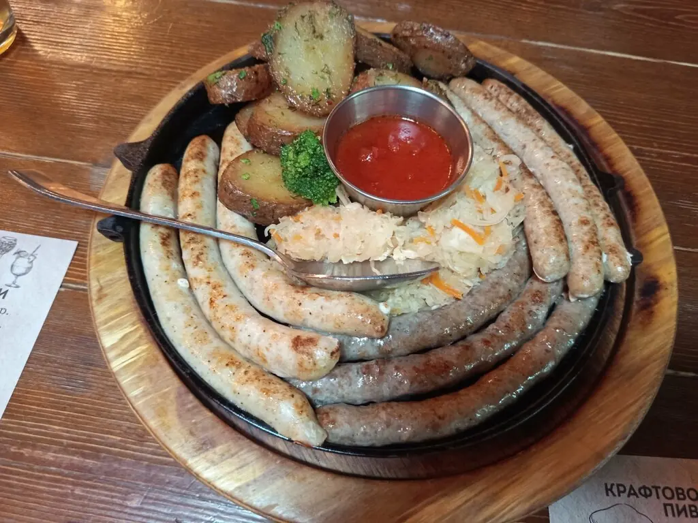
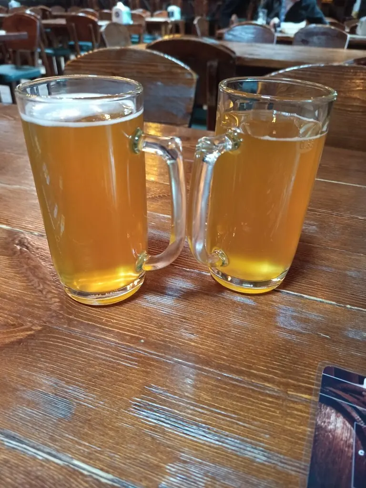
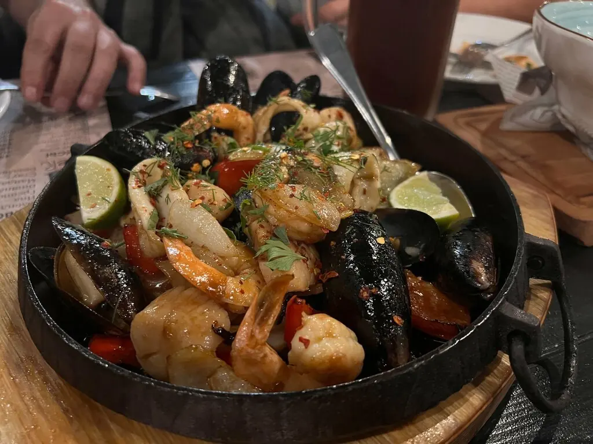
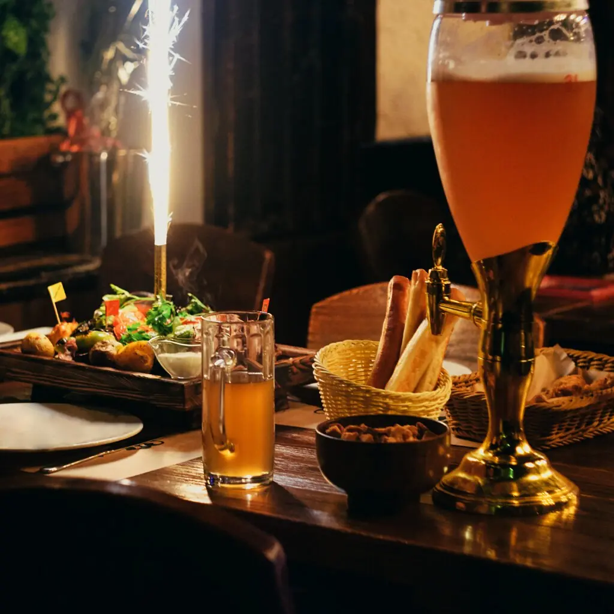
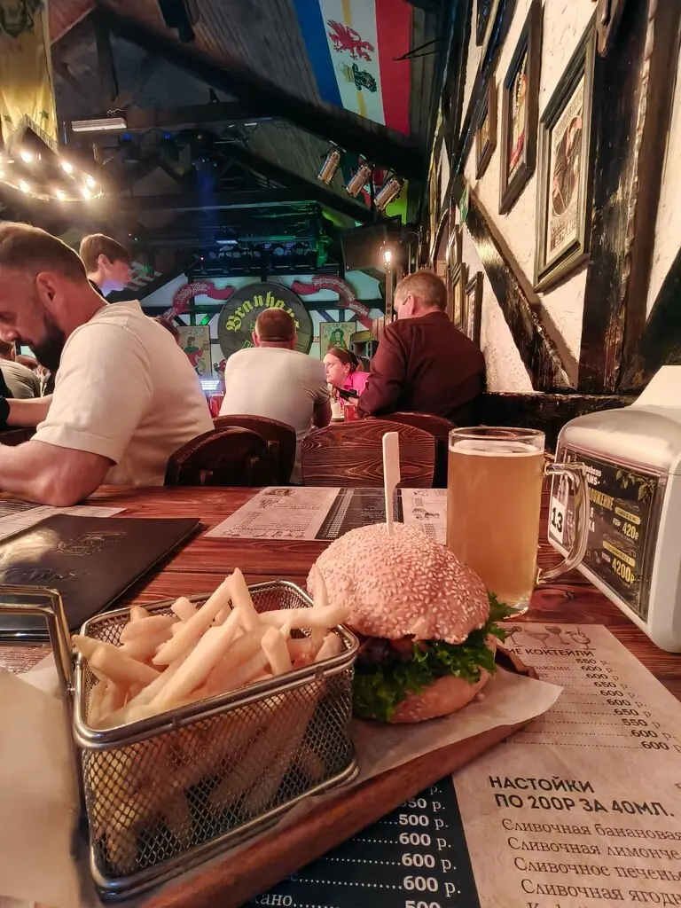
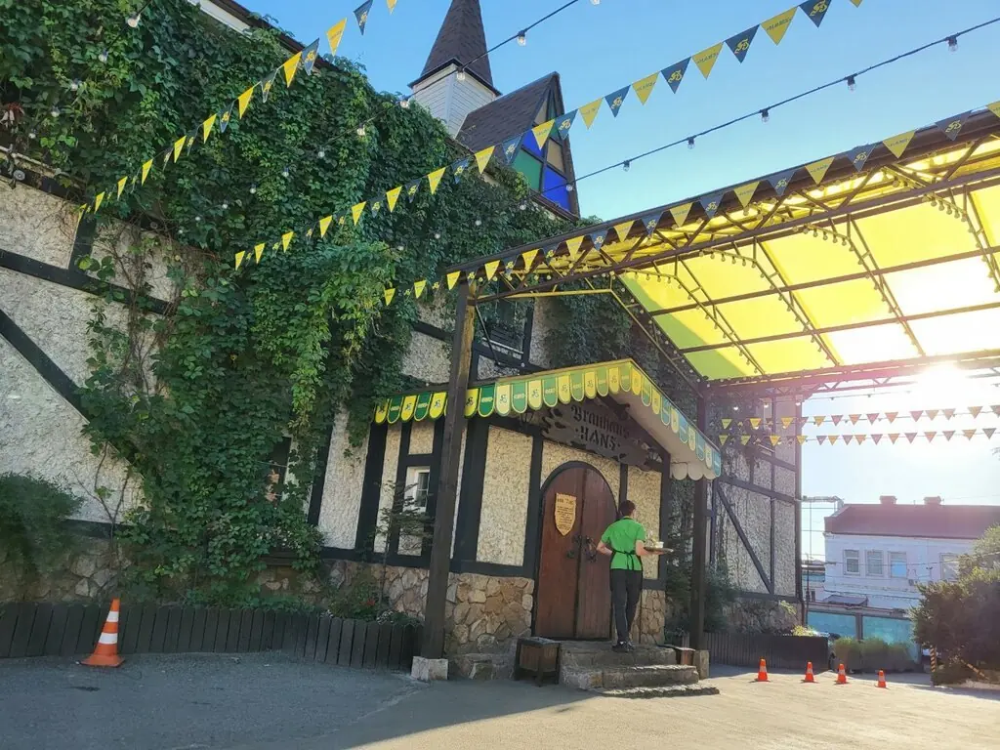
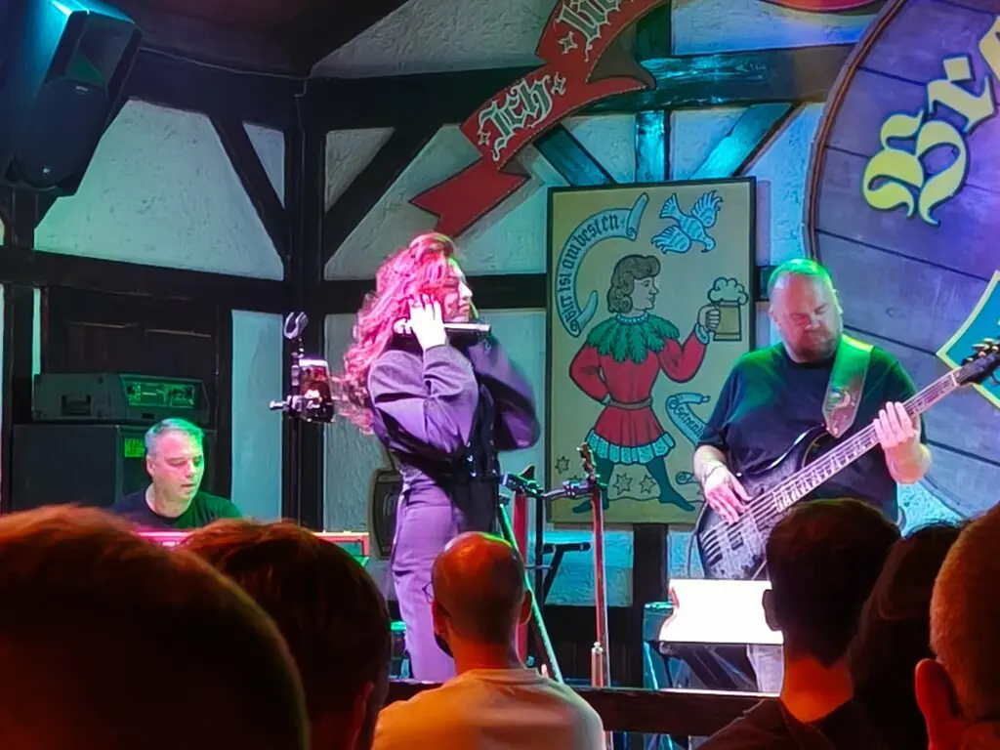

Hans
Пивной сад посреди Владивостока: пенное, колбаски и живые группы до самого утра в выходные.
4,8 · 1480 оценок
Наливаем по мере прокрутки
Немецкая и русская кухня, 160 мест и зал в стиле старой пивоварни. Здесь хвалят быструю подачу, цены и то, что группы поют прекрасно.
На стол






Полное меню с ценами добавим из вашего прайса. По будням есть меню недели.

Живьём
Сцена прямо в зале, а по пятницам и субботам открыто до 4 утра. Лучшие места у сцены бронируйте заранее.
Классное место. Кухня очень вкусная. Пиво огонь. Группы поют прекрасно.Настя Уланова
Живая музыка вообще огонь!Денис Симдянкин
Цены нормальные, обслуживание очень быстрое, всё вкусно.Miss M.M.
Prost!
Владивосток, улица Адмирала Фокина, 25аПн–чт 11:00–02:00, пт–сб 11:00–04:00, вс 11:00–00:00+7 908 992-47-97